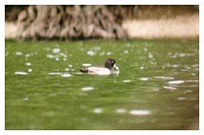

Ring-necked Duck
Rare overseas vagrant to the British Isles. Rare in Somerset, but more frequent in recent years.

17/09/00 - Single male associating with a small flock of Tufted Ducks. Remained until 24/09 (DWH)
14/12/11 - 2 males stayed 2 days, then one of them returned on 30/12 (KGH)
25/01/17 - 1 female (DWH)
17/02/17 - 1 female (SH)
13/11/21 - 1 pair spotted in the evening, gone the next day (DWH)